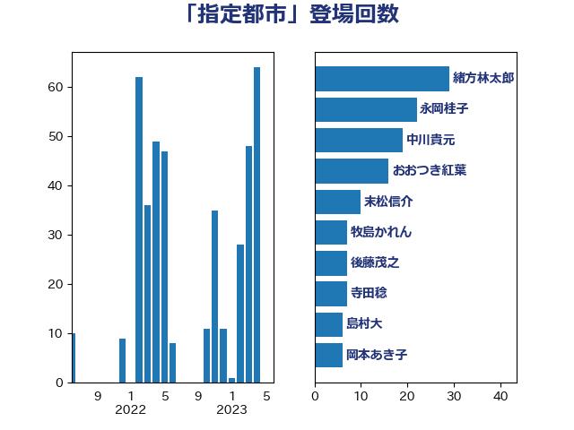

単語「指定都市」

| 緒方林太郎 | 無所属 | 29 回 |
| 永岡桂子 | 自由民主党 | 22 回 |
| 中川貴元 | 自由民主党 | 19 回 |
| おおつき紅葉 | 立憲民主党 | 16 回 |
| 末松信介 | 自由民主党 | 10 回 |
| 牧島かれん | 自由民主党 | 7 回 |
| 後藤茂之 | 自由民主党 | 7 回 |
| 寺田稔 | 自由民主党 | 7 回 |
| 島村大 | 自由民主党 | 6 回 |
| 岡本あき子 | 立憲民主党 | 6 回 |
| 古川直季 | 自由民主党 | 6 回 |
| 高木かおり | 日本維新の会 | 5 回 |
| 市村浩一郎 | 日本維新の会 | 5 回 |
| 宮本岳志 | 日本共産党 | 5 回 |
| 松本剛明 | 自由民主党 | 4 回 |
| 岸真紀子 | 立憲民主党 | 4 回 |
| 岩谷良平 | 日本維新の会 | 4 回 |
| 山際大志郎 | 自由民主党 | 4 回 |
| 山崎正恭 | 公明党 | 4 回 |
| 萩生田光一 | 自由民主党 | 3 回 |
| 芳賀道也 | 国民民主党 | 3 回 |
| 田畑裕明 | 自由民主党 | 3 回 |
| 牧山ひろえ | 立憲民主党 | 3 回 |
| 片山大介 | 日本維新の会 | 3 回 |
| 岸田文雄 | 自由民主党 | 3 回 |
| 吉川元 | 立憲民主党 | 3 回 |
| 鰐淵洋子 | 公明党 | 2 回 |
| 野田聖子 | 自由民主党 | 2 回 |
| 赤池誠章 | 自由民主党 | 2 回 |
| 緑川貴士 | 立憲民主党 | 2 回 |
| 湯原俊二 | 立憲民主党 | 2 回 |
| 柳本顕 | 自由民主党 | 2 回 |
| 東徹 | 日本維新の会 | 2 回 |
| 川田龍平 | 立憲民主党 | 2 回 |
| 尾身朝子 | 自由民主党 | 2 回 |
| 小沢雅仁 | 立憲民主党 | 2 回 |
| 小宮山泰子 | 立憲民主党 | 2 回 |
| 守島正 | 日本維新の会 | 2 回 |
| 大西健介 | 立憲民主党 | 2 回 |
| 大口善徳 | 公明党 | 2 回 |
| 吉田久美子 | 公明党 | 2 回 |
| 伊藤岳 | 日本共産党 | 2 回 |
| 伊藤孝恵 | 国民民主党 | 2 回 |
| 一谷勇一郎 | 日本維新の会 | 2 回 |
| 金子道仁 | 日本維新の会 | 1 回 |
| 進藤金日子 | 自由民主党 | 1 回 |
| 豊田俊郎 | 自由民主党 | 1 回 |
| 西田実仁 | 公明党 | 1 回 |
| 西村康稔 | 自由民主党 | 1 回 |
| 西岡秀子 | 国民民主党 | 1 回 |
| 藤井比早之 | 自由民主党 | 1 回 |
| 舩後靖彦 | れいわ新選組 | 1 回 |
| 羽生田俊 | 自由民主党 | 1 回 |
| 福田昭夫 | 立憲民主党 | 1 回 |
| 石田真敏 | 自由民主党 | 1 回 |
| 石川香織 | 立憲民主党 | 1 回 |
| 盛山正仁 | 自由民主党 | 1 回 |
| 畦元将吾 | 自由民主党 | 1 回 |
| 牧野たかお | 自由民主党 | 1 回 |
| 浮島智子 | 公明党 | 1 回 |
| 河野太郎 | 自由民主党 | 1 回 |
| 沢田良 | 日本維新の会 | 1 回 |
| 池田佳隆 | 自由民主党 | 1 回 |
| 江田憲司 | 立憲民主党 | 1 回 |
| 森山浩行 | 立憲民主党 | 1 回 |
| 柴田巧 | 日本維新の会 | 1 回 |
| 柳ヶ瀬裕文 | 日本維新の会 | 1 回 |
| 松野博一 | 自由民主党 | 1 回 |
| 本田顕子 | 自由民主党 | 1 回 |
| 日下正喜 | 公明党 | 1 回 |
| 掘井健智 | 日本維新の会 | 1 回 |
| 岬麻紀 | 日本維新の会 | 1 回 |
| 小池晃 | 日本共産党 | 1 回 |
| 小寺裕雄 | 自由民主党 | 1 回 |
| 宮崎勝 | 公明党 | 1 回 |
| 大石あきこ | れいわ新選組 | 1 回 |
| 吉良よし子 | 日本共産党 | 1 回 |
| 吉田とも代 | 日本維新の会 | 1 回 |
| 古川俊治 | 自由民主党 | 1 回 |
| 今井絵理子 | 自由民主党 | 1 回 |
| 井坂信彦 | 立憲民主党 | 1 回 |
| 中川宏昌 | 公明党 | 1 回 |
| 三浦靖 | 自由民主党 | 1 回 |
| 三上えり | 立憲民主党 | 1 回 |